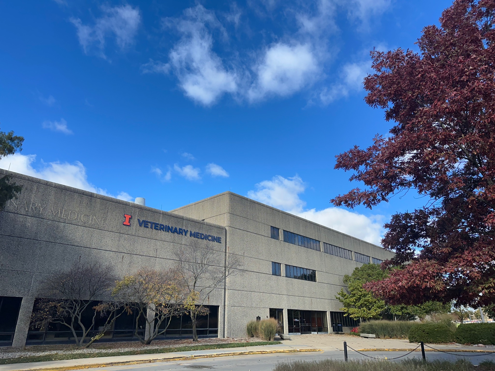

Mouse mAb development
Mouse immunization, hybridoma generation, application-specific screening and selection of monoclonal antibody-producing clones.

CUSTOM ANTIBODY SERVICES
CUSTOM mAb & pAb DEVELOPMENT
Choose mouse monoclonal antibodies for a defined epitope or rabbit polyclonal antibodies for recognition of multiple epitopes on an antigen.
Define the target, antigen presentation, sample matrix and assay format to shape the development and screening plan.
Mouse immunization, hybridoma generation, application-specific screening and selection of monoclonal antibody-producing clones.
Rabbit immunization, serum collection and screening of the polyclonal antibody response, with purification options suited to the antigen and intended use.
Define screening for ELISA, lateral flow, multiplex assays or another format, including the target specificity and sample conditions that matter to your project.
Assess antibody binding and specificity, and select complementary capture and detection pairs for sandwich assays.
Plan production from selected hybridomas or rabbit serum. Discuss scale, purified IgG, antigen-affinity purification, conjugation and formulation within the agreed scope.
STANDARD MOUSE mAb DEVELOPMENT PACKAGE
Mouse mAb scope for one antigen.
Final specifications belong in the quotation.
| Project element | Scope |
|---|
Delivery targets depend on successful clone development and adequate productivity. The 5 mg target is total antibody from one selected clone. Binding ELISA alone does not establish performance in other assays or clinical diagnostics.
INDICATIVE SERVICE FEES · USD
Rabbit pAb projects are quoted separately according to antigen, immunization, screening and purification requirements. The fees below apply to mouse mAb services.
Listed fees guide project planning and remain subject to capacity confirmation, institutional rate approval and a final written quotation.
The academic planning fee is . Individual milestone charges will be agreed in the written quotation.
| Milestone | Milestone fee | Review point |
|---|
The quotation should define stopping points, charges for completed work and approval of additional work. Development success is an objective and is not guaranteed.
AGREEMENTS & MATERIAL USE
Research use, material transfer and commercial rights
may require different agreement routes.
For outgoing University research materials, Illinois uses a Material Transfer Agreement, or MTA, managed by the Office of Technology Management. Commercial use or licensing of technology may require a different agreement.
The responsible University office should confirm the applicable agreement, ownership, permitted use and authorized signatories for your project.
View Illinois agreement guidance →PREPARE A SCIENTIFIC DISCUSSION
Use this local brief builder to outline your request. Your selections can guide a conversation about feasibility, price and agreement requirements.
No inquiry is sent, no order is placed and no agreement is signed. Contact routing will be added once the Hub contact is confirmed.
PROJECT QUESTIONS
No. Delivery depends on successful clone development and productivity. The quotation should define review points, payable completed work and any repeat-work charges.
Performance must be demonstrated for the intended application, sample type and assay conditions. Additional characterization or diagnostic validation requires a defined scope.
Browse our Influenza A virus mAb catalog for H1N1, H3N2 and H5N1 antibodies. Request product details and a quotation for your target and application.
The page includes a place for the approved agreement and signing link. The link must be assigned after the responsible University office confirms the applicable document and authorized process. A checkbox or locally generated brief does not execute an agreement.
SERVICE INFORMATION
Academic and industry project fees start at $11,000 and $14,000 respectively. Final pricing, deliverables and agreement terms are confirmed in writing, subject to applicable institutional rate approval.